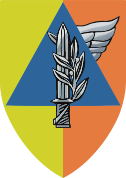
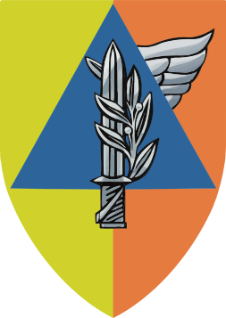
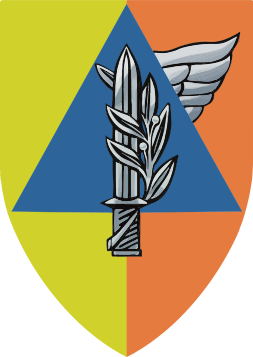

ציר הזמן- מ"פלח"ץ" לחטיבת החילוץ וההדרכה
עכשיו- חטיבת החילוץ וההדרכה
1992- הקמת פיקוד העורף
2003- הקמת פלוגת החילוץ הראשונה
2004- הקמת פלוגת 'חץ' ופלוגת 'רותם'
2008- איחוד פלוגות החילוץ והקמת גדוד שחר
2009- הקמת גדוד קדם
2009- המעבר ממגל לפקע"ר
2012- הקמת גדוד תבור
2012- הקמת גדוד רם
2013- הקמת הנפה הסדירה
1984- בה''ד 16
2016- איחוד בה''ד 16 והנפה הסדירה
ייעוד ותפקידי חטיבת החילוץ וההדרכה
ייעוד ותפקידי חטיבת החילוץ וההדרכה
תפקידי החטיבה בשגרה
תפקידי החטיבה בחירום
תפקידים מרכזיים- מפקדה משימתית- טורקיה
תפקידים מרכזיים- מפקדה משימתית- קורונה
תפקידים מרכזיים- חילוץ בעורף
תפקידים מרכזיים- חילוץ בסיוע לתמרון
תפקידים מרכזיים- אב''כ
תפקידים מרכזיים- בט''ש
מבנה החטיבה- יחידות ומפקדה
מפקדת חטיבת החילוץ וההדרכה
בא''ח העורף
בא''פ העורף
ביה''ס לפיקוד ולמקצועות העורף
יחידת מתכים
אודות:
מפקדת גפ''ה:
רס''ן שירה קרצ'ין
ק. ניהול ידע:
סג''ם אורי ספרנוביץ
פיתוח:
רב''ט תמר שנהב
גרפיקות:
טוראי שקד שואן
מומחה תוכן:
אל''ם אלעד אדרי
גרסה:
חודש 2024
צור קשר:
gapa.rescue@gmail.com


 
